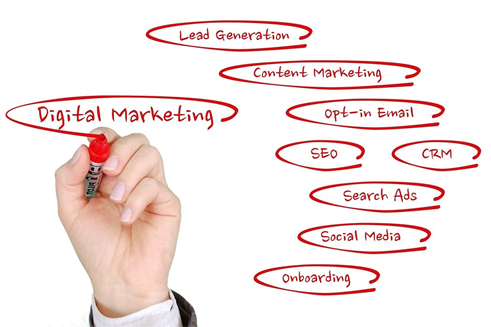

Growth marketing requires digital marketing to work. Many new online marketers struggle to find the best solutions to their problems, not knowing that there are easy ways to get around.
In my earlier years employing digital marketing strategies for growth, I was overwhelmed with how much there was to do and learn. Looking back now, I realize that many of the things I know now about digital marketing would have prevented those dead ends.
I want to help you with a complete beginner’s guide to digital marketing with all the knowledge I have gathered over time.
What is Digital Marketing?
Although it sometimes appears to be complicated, digital marketing is simply “marketing done using digital technologies.” Digital marketing is a form of advertising that uses online marketing strategies to promote and sell products and services.
Digital marketing uses online and offline channels like:
- Search engines
- Websites
- Emails
- Mobile Apps
- Social media
- Electronic devices
- Other new digital marketing channels
However, this article focuses on digital marketing efforts done online. Since you are reading a beginner’s guide, you probably feel overwhelmed with all the details. Although, you don’t have to worry about that much. You should be able to understand complex matters better by the end of this article.
How Digital Marketing Works

Remember, digital marketing is similar to traditional marketing in many ways. However, despite their similarities, digital marketing has almost taken over completely. The reason is that digital marketing efforts are designed for the clients of today.
Statistics show that up to 85% of buyers run an online search before buying a product. This statistic means that whether you sell goods or services, your online presence is essential. The right digital marketing strategy will connect you with your target audience in different ways.
- With content, they can stay updated on news, your services, solutions you offer, and more.
- Search Engine Optimization improves your site’s visibility, especially when someone searches a keyword related to a post you made in the past.
- Using social media will let you engage and interact with them through posts.
- Advertising works like a billboard to drive traffic to your site after paying for a slot.
- Email marketing is the last channel for following up with clients and sharing special loyalty promos and more.
These digital marketing strategies work together like a well-oiled machine to boost profit. This guide will help beginners understand how digital marketing works and use it to their advantage.
Categories of Digital Marketing: Skills You Need to Have as a Digital Marketer
Before you are qualified to call yourself a digital marketer, you need certain skills in your arsenal. Besides basic marketing skills and creativity, you will need to understand how basic digital marketing works. The three basic foundational skills digital marketers need are search engine optimization, social media marketing, and content marketing. The other categories of digital marketing are like icing on the cake.
These other digital marketing strategies are:
- Web design
- Pay-per-click advertising
- Affiliate marketing
- Email marketing and more
The best part of learning about them is that you can use them together for better results.
Social Media Marketing
Social media marketing is another strong point of digital marketing. Almost everyone uses various social media platforms, so it is a perfect means to reach your target audience.
Social media and social media marketing work in the following ways:
- It allows your audience to engage with your brand outside your site.
- Social media marketing gives users a medium to reach you directly through ad links.
- It helps you promote your products, blogs, pages, and more.
Do you know why social media marketing can be so effective? Digital consumers spend more than 2 hours on social platforms. This means that you have the opportunity to reach potential customers with what you have to offer for almost three hours each day.
Search Engine Optimization (SEO)
In simple terms, SEO is a means of ensuring your content shows on search engine result pages (SERPs) when people search online. Applying SEO best practices to your site, content, and other online details relevant to your brand will improve your SERPs’ rank. As an SEO expert, you can work or pair with content marketing for better results.
SEO requires:
- Keyword research with tools like Moz and Ahrefs
- Site traffic analysis with tools like Google Analytics
- Site structure improvement for a better ranking using tools like Google Search Quality Evaluator Guidelines.
Content Marketing
The Internet promotes content marketing effectively by giving content marketers a platform. Content marketing, content creation, and search engine optimization usually work hand-in-hand.
Content marketing seeks to add active, long-term value to your audience, unlike adverts that only add short-term value. Content marketing has unique features like it is versatile and can meet your audience at any point in the sales funnel.
Content marketing makes use of content. Some types of content are:
- Podcasts
- Video content
- Blog posts
- eBooks
- Marketing emails
Content marketing is vital for effective digital marketing. The best part of content marketing is that it is customizable to suit a customer’s needs.
7 Beginner’s Steps to Doing Digital Marketing
The processes involved in content marketing aren’t necessarily step-by-step processes. The most important factor is knowing how to do digital marketing properly.
1. Create a Website
A website is a focal point for generating business leads from site visitors. Websites are useful on SERPs, and it gives visitors a place to go when they look for you.
Websites are not all equal; some are better than others. The best way to build a solid site is to partner with professional website designers. Another alternative to a professional for beginners is using DIY site builders like Shopify.
2. Set up a CRM Or An Automated Email Marketing System
Since many site visitors are usually running buying research, they may not be ready to buy on their first visit. Getting their contact information will help you to send reminders and special offers. Using automatic email marketing is affordable, practical, and functional. It offers one of the highest Return on Investment (ROI).
3. Optimize for “Near-me” Searches
The first and most important step is to have an updated Google My Business page with all your current details. Next, list your business in numerous directories for the best result. Lastly, don’t forget to update reviews, especially positive ones.
4. Maximize the Potential of Your Social Media Account
This point is relatively self-explanatory. Regularly posting on social media helps you engage your audience effectively. Remember that the actual number of posts per day varies and that social media content needs to be relevant.
5. Don’t Forget About Search Engine Optimisation and Content Marketing
Like I stated earlier, search engine optimization and content marketing are Kings in the digital marketing space. Proper SEO implementation will boost your ROI. It is best to incorporate SEO in your content marketing for optimum results. An excellent SEO rank on SERPs builds trust with potential customers.
6. Try Pay-per-click (PPC) Advertising
Although it’s best to go for PPC when all else fails, it is important to give credit to its functionality. It’s best to use advertising to accelerate growth instead of using it as your main growth source. Pay-per-click lets you generate site traffic by bidding for adverts on a specific keyword and pay when those ads get clicks.
7. Don’t Forget the Analytics
Analytics is every content marketer’s best friend, especially beginners. With Analytics, you can see the precise points that require improvement and work on them. A free, useful analytics tool you can use when starting is Google analytics. It is also essential to know that it is one of the best analytics tools, so you are in luck.
Benefits of Digital Marketing
When your digital marketing efforts are solid, you will have an excellent digital presence which helps you in many ways. Some of these benefits are:
- A solid digital marketing effort leads to a better online presence that makes creating awareness easier. It also makes pre and post-sales engagement seem more effortless.
- It helps you shorten the sales funnel by meeting buyers with the right offers at the point of their needs.
- With digital marketing, you can create a solid customer base. When you offer them top-notch services, you can get loyalty benefits from them like:
- Referrals
- Social media sharing of your business
- Word-of-mouth marketing and more
- New buyers can become massive fans of your product and start making purchases more often.
- Older marketing strategies like billboards and others are slowly becoming obsolete. The targeted audience (car passengers) usually spend the better part of a car ride on their mobile phones. For instance, 60-70% of drivers in several first-world countries started using their mobile devices sometimes when driving.
- The amount of people who are glued to their electronic devices daily keeps increasing.
The Digital Marketing Skills Gap
The digital marketing skills gap shows the difference between the skills needed for completing a task and the skills an employee possesses. The gap is real, so reading articles like this one and checking other materials will help you bridge it. Although some individuals have the knack for digital marketing, all of us started somewhere. So, be patient and persistent; it will add up in the end.
Rounding Up
The type of digital marketing strategy you use is a significant determining factor when you see results. Some of these marketing strategies are more long-term oriented, so results may take a while to show.
However, you can measure your ROI to monitor your progress. Lastly, if you are looking for a timeline, results usually show within the first six months if you do things the right way. Digital marketing is one of these fields where slow and steady does it, so be patient, put in your best efforts, and let things go at their pace.
About the Author

Viena runs a content writing agency. She is an Information technology graduate who has been working in the freelance writing industry for more than 7 years. She has worked as a content writer, senior editor, and project manager for projects in multiple niches.
Leave a Reply